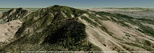
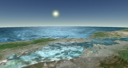

Analytical Graphics, Inc.
Analytical Graphics, Inc.
Terrain describes the shape or surface geometry of the globe. A terrain dataset is sometimes known as a Digital Elevation Model (DEM).
| Terrain Tileset | Description | Provider | |
|  | STK World Terrain | High-resolution, mesh-based terrain for the entire globe. Free for use on the Internet. Closed-network options are available. |
Analytical Graphics, Inc. |
|  | Small Terrain | Medium-resolution, heightmap-based terrain for the entire globe. This tileset also includes a water mask. Free for use on the Internet. |
Analytical Graphics, Inc. |
Images in the table above use terrain and imagery data Copyright © Analytical Graphics, Inc., CGIAR-CSI, Microsoft Corporation, Earthstar Geographics SIO, NASA, Harris Corp., Earthstar Geographics LLC, and USGS.